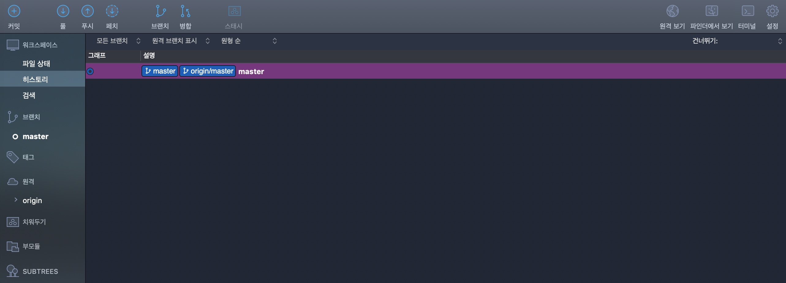
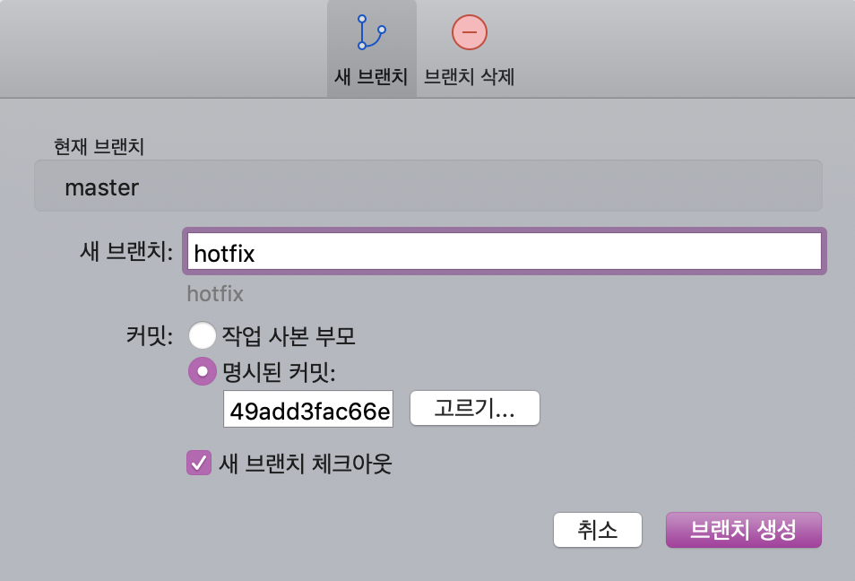
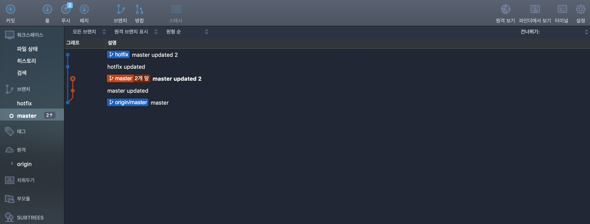
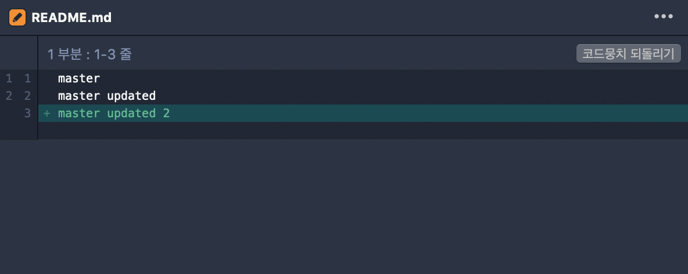
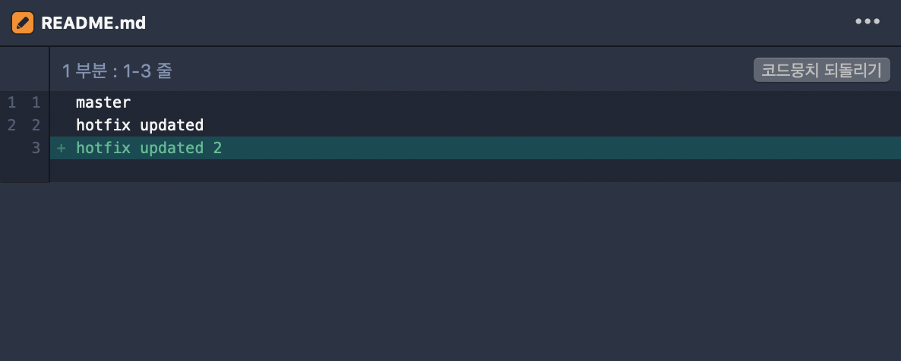
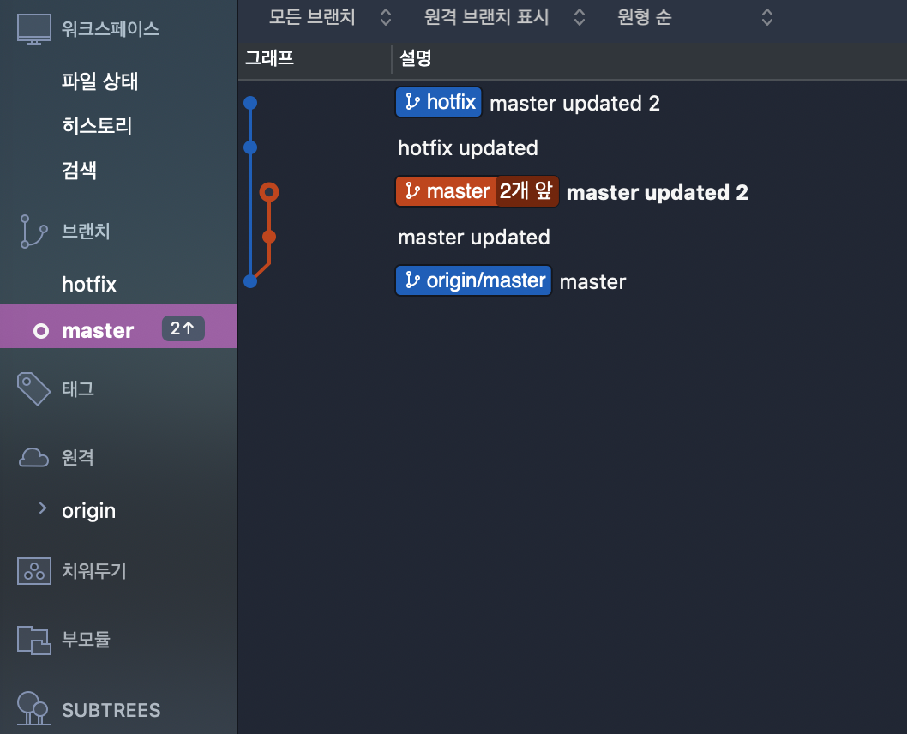
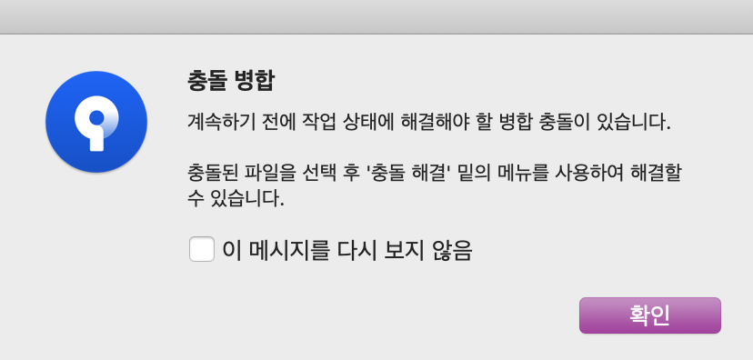
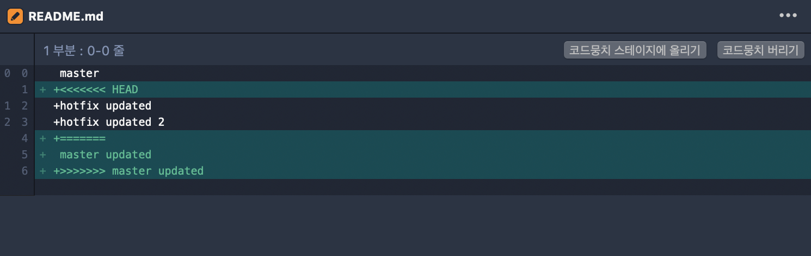
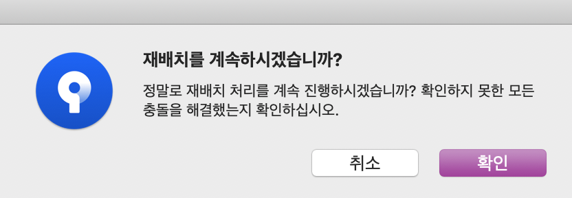
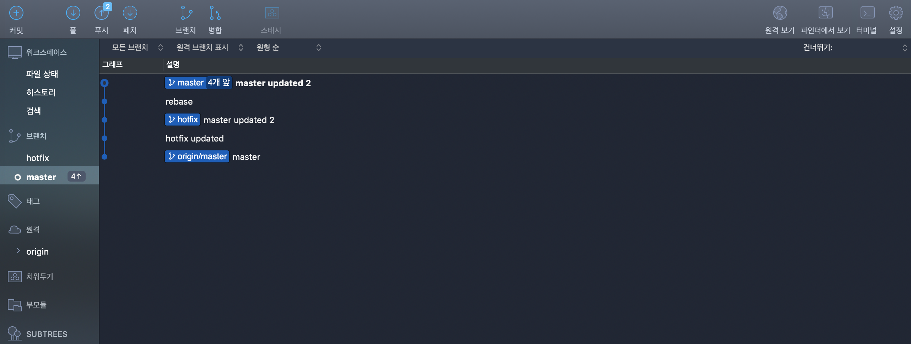

Sourcetree 실행 시 첫 화면
Local에서 디렉토리 불러온 후 현재 Commit 상태 확인

재배치를 하기 앞서 branch를 만든다.

'hotfix'라는 branch를 생성

'master', 'hotfix' branch가 있는 것을 확인

bash에서 작업을 한다.
Sourcetree로 돌아와서 branch 확인
더 명확하게 차이를 보기 위해 각각의 branch에 commit을 추가했다. 과정은 위와 동일하다.
더 명확하게 차이를 보기 위해 각각의 branch에 commit을 추가했다. 과정은 위와 동일하다.

'master' branch의 파일 내용

'hotfix' branch의 파일 내용

본격적으로 재배치하기 전에 현재 branch를 'master'로 체크아웃한다.
그래야 'master' branch로 파일 내용이 병합된다.
그래야 'master' branch로 파일 내용이 병합된다.

재배치를 원하는 branch선택. 여기선 'hotfix' 우클릭 후 '재배치' 클릭
'재배치' 밑에 '하위 요소 대화식 재배치'가 있는데 Commit 삭제, 메시지 편집 등 기능을 제공한다. 직접 확인해보길 바란다.
'재배치' 밑에 '하위 요소 대화식 재배치'가 있는데 Commit 삭제, 메시지 편집 등 기능을 제공한다. 직접 확인해보길 바란다.

재배치 확인창

두 branch사이의 파일 내용이 다르니 당연히 충돌이 발생한다.

친절하게 파일을 어떻게 수정해야 하는지 보여준다.

수정해야할 내용만 보여줄 뿐 수정은 직접해야 한다. bash에서 작업을 한다.
충돌이 일어나는 부분을 직접 수정해서 commit을 한 후, 이 commit에 HEAD가 있는 것을 알 수 있다.

'재배치 계속'을 해서 충돌이 더 있는지 확인한다.
파일(코드)의 양이 클수록 직접 재배치하기가 까다롭다. 충돌이 없을 때까지 파일을 수정하고 '재배치 계속'으로 확인해야한다.
파일(코드)의 양이 클수록 직접 재배치하기가 까다롭다. 충돌이 없을 때까지 파일을 수정하고 '재배치 계속'으로 확인해야한다.

재배치 확인창

더 이상의 충돌이 없다면 두 branch가 합쳐진다.

bash에서 branch를 확인해본다.